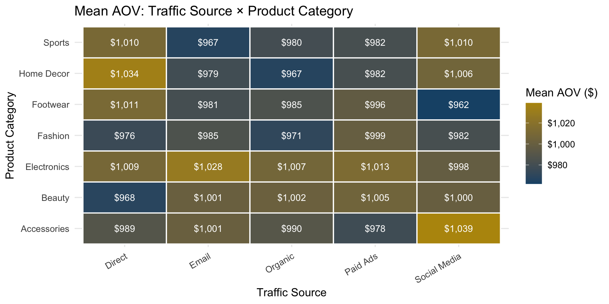
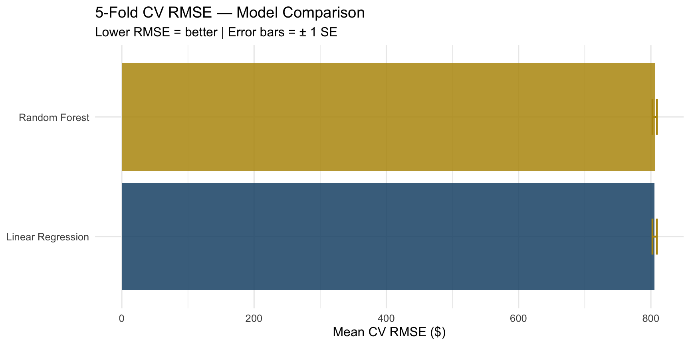
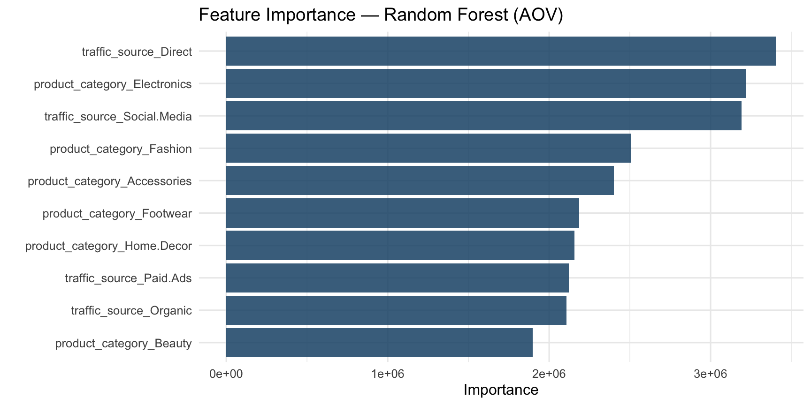
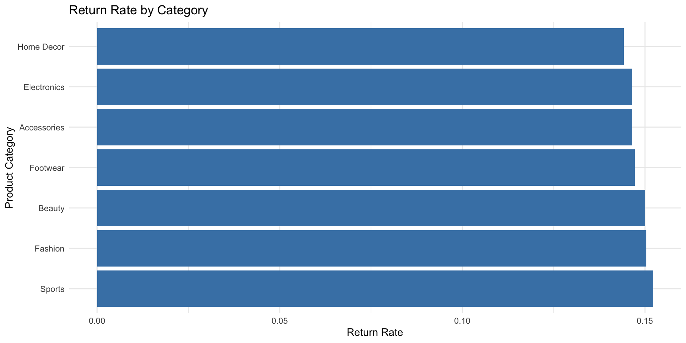
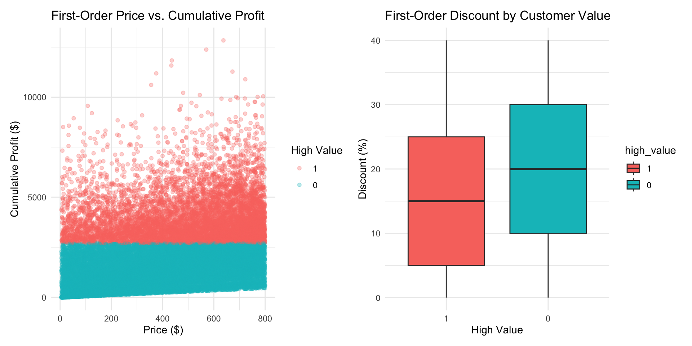
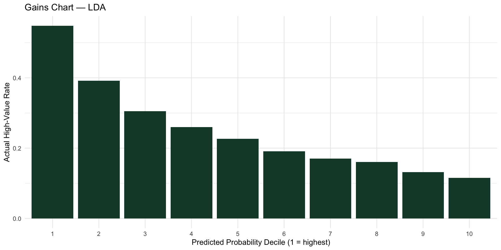
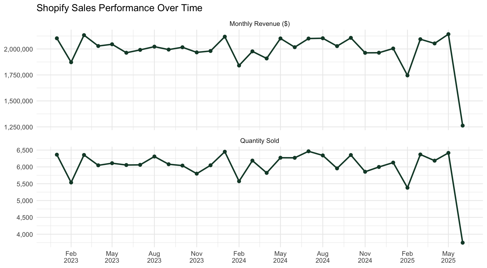
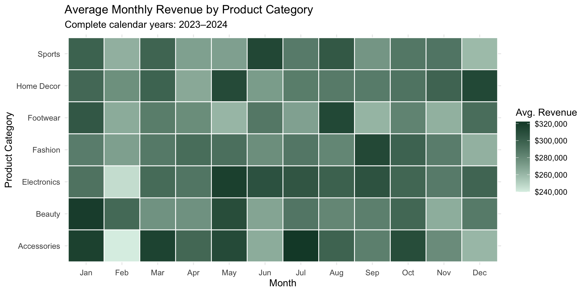
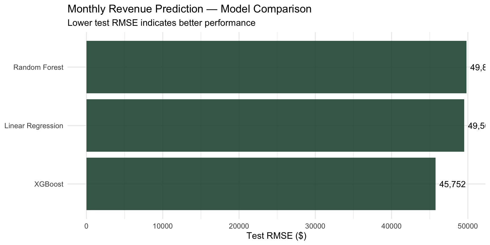
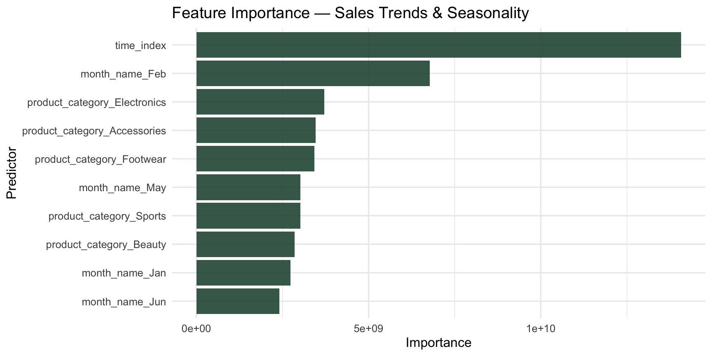

Predicting Profitability, Returns, and Customer Value in Shopify Sales
Final Report
Group 2:
Kevin Bachez, Alexa Bueno, Leeann Lewis-Waddell,
Ron Stephen Sabilla, Brian Vuong
Table of Contents
Research
Analytics Objective 1
Analytics Objective 2
Analytics Objective 3
Analytics Objective 4
Analytics Objective 5
Introduction
Problem Definition
The Core Challenge
- The Issue: Top-line gross transaction value is growing, but net profit margins are being aggressively eroded
- The Friction: High acquisition costs from
Paid Ads & Social Media compounded by excessive discounting and high return rates
- The Gap: No automated system to identify which product category, traffic source, and discount combinations trigger unprofitable transactions
Business & Financial Impact
Margin Compression: Heavy discounts (discount_percent) drive volume (quantity) but cannibalize net profit per order
Logistical Drain: Returns (is_returned) create operational bottlenecks and sunk costs through absorbed shipping_cost overhead
The Goal: Build an ML framework to optimize marketing spend, predict return probability, and maximize net profit margins
Research Objectives
RO1 – Marketing Channels & Average Order Value: Determine which marketing traffic source generates the highest average order value and whether this relationship differs across product categories.
RO2 – Customer Satisfaction Analysis: Identify which customer and transaction characteristics contribute to higher customer satisfaction by examining how product categories, traffic sources, discount levels, and purchasing behavior influence customer rating.
RO3 – Returns & Profitability Analysis: Evaluate how product categories, shipping costs, customer ratings, and discount structures impact the probability of an item being returned and quantify the resulting drain on net profit.
RO4 – Profit Impact of Customer Retention: Determine whether repeat customers are a more margin-efficient growth channel than new customer acquisition.
RO5 – Sales Trends & Seasonality: Determine how sales performance changes over time and whether seasonal patterns differ across product categories.
Importance of the Research
- Top-line transaction value is growing across the business, but net profit margins are being eroded — and no single team or department owns the full explanation why
- Acquisition costs, discounting behavior, customer satisfaction, return rates, and retention all interact, but are typically analyzed in isolation — this project connects them
- Understanding which marketing channels perform best (AO1), what drives customer satisfaction (AO2), what triggers returns (AO3), whether repeat customers are more profitable (AO4), and how sales shift seasonally (AO5) gives a full-funnel view of where margin is actually being lost
- Predictive models across these objectives let the business move from reactive reporting to proactively flagging unprofitable channel–category–discount combinations before they happen
- This addresses a real operational gap: the business currently lacks any automated, predictive system tying acquisition, satisfaction, returns, and retention together
Population / Sample
Shopify e-commerce orders from January 2023 to June 2025
Unit of analysis: Individual order (n = 60,000)
31,154 unique customers | 6,998 unique products
Scope limit: Findings generalize only to these countries, categories, and date range
| Country |
USA |
UAE |
CAN |
UK |
IND |
GER |
AUS |
| Category |
Accessories |
Sports |
Electronics |
Footwear |
Beauty |
Fashion |
Home Decor |
Kaggle, Shopify Sales Dataset for ML & EDA
Kaggle notes the dataset is “realistic,” presumably meaning transactions are not verified, and thus, synthetic.
Sample Characteristics
The dataset contains 60,000 Shopify e-commerce orders from January 2023 to June 2025
The sample includes 31,154 unique customers and 6,998 unique products
Customers are located across 7 countries: USA, UAE, Canada, UK, India, Germany, and Australia
Products are grouped into 7 categories: Accessories, Sports, Electronics, Footwear, Beauty, Fashion, and Home Decor
Key variables capture customer characteristics, product information, pricing, discounts, traffic sources, ratings, returns, and purchasing behavior
This allows the analysis to examine the customer journey across acquisition, satisfaction, returns, profitability, retention, and seasonality :::
Analytics Objective 1
Predict average order value (AOV) from traffic source & product category. Identify which channel × category combination drives the highest order value.
Machine Learning Methods
- Regression: Linear, Ridge, Lasso, Elastic Net
- Classification: Logistic Regression, KNN, Decision Tree (AOV → Low/Med/High)
- Ensembles: Random Forest, XGBoost, Bagged Trees
Data Wrangling & Visualization
- Filter missing values; keep only valid orders (revenue > 0)
- One-hot encode channel & category; bin AOV into tiers
- Boxplots by channel, heatmap of mean AOV across channel × category

Model Fitting
- 80/20 stratified split + 10-fold CV
- Recipe: normalize, one-hot encode, bin AOV for classification
- Tune: penalty, mtry, trees, learn rate, tree depth
Prediction & Model Evaluation
- Regression: RMSE · R² via 5-fold cross-validation
- Linear Regression vs. Random Forest evaluated on the same folds
- Best model selected by lowest RMSE; evaluated on held-out test set

Interpretation
- product_category_Electronics and traffic_source_Social.Media are the top AOV-driving features
- Social Media × Accessories drives the highest mean AOV (~$1,039) per the heatmap
- Channel and category together explain consistent AOV patterns across all 60,000 orders

Summary Findings
- Social Media × Accessories = highest mean AOV (~$1,039) across all channel × category combinations
- Electronics and Social Media are the top AOV-driving features per Random Forest variable importance
- Linear Regression and Random Forest achieve similar RMSE (~$800) → channel × category relationship is largely linear
- Prioritize marketing spend on Social Media → Electronics & Accessories to maximize revenue per order
Analytics Objective 3
Predict return risk (is_returned) from category, discount, shipping cost & rating, and assess the downstream profit impact of high-risk orders.
Machine Learning Methods
- Regression: Logistic Regression (binary outcome)
- Classification: LDA, QDA, KNN, Decision Tree
- Ensembles: Bagged Trees, Random Forest, XGBoost
Data Wrangling & Visualization

- Convert
is_returned & product_category to factors; confirm zero missing values
- Stratify splits/CV on
is_returned — ~15% return rate (class imbalance)
Model Fitting
- 75/25 stratified split + 3–10 fold CV
- Recipe: dummy-encode categoricals, zero/near-zero variance filter (no normalization for trees)
- Tune: cost complexity, mtry, trees, learn rate, neighbors (k)
Prediction and Model Evaluation
- Primary metric: ROC AUC, 10-fold CV mean (class imbalance makes accuracy misleading)
- Confusion Matrix · Sensitivity/Specificity per model
- Best model by CV
roc_auc → XGBoost (margin over runner-up discussed in Summary Findings)
Interpretation
- SHAP (
predict_parts()) → shipping_cost ranks #1, ahead of discount_percent (ranking taken with the predictive-strength caveat in Summary Findings)
- Variable importance (manual
ggplot2, xgb.importance()) confirms SHAP ranking
- Framing: discount % & shipping cost = pre-purchase levers; rating = post-purchase signal
Summary Findings
- XGBoost = top model by 10-fold CV, ROC AUC = 0.509 (SE ≈ 0.003) — narrowly ahead of Lasso Logistic Regression (0.505), Decision Tree (0.503), and Random Forest (0.501), though the margin is within one standard error of the runner-up, so the lead is not statistically decisive
- Shipping cost, not discount or category, is the leading return-risk driver → diverges from original hypothesis
- SHAP & PDPs confirm shipping cost and discount % as key, actionable drivers
- Deployed as a self-contained client-side calculator for pre-purchase return-risk scoring
- Profit impact: On average, a returned order carries ~$87 in sunk shipping and discount cost (avg. shipping cost ≈ $13.44 + avg. discount amount ≈ $73.74) that is spent regardless of the return, with no offsetting revenue retained. Applied across the 8,887 returned orders (14.8% of the 60,000-order dataset), this represents roughly $775K in aggregate sunk cost tied to returns. Notably, raw profit-per-order is nearly identical between returned ($974.81) and kept ($981.58) orders — the ~$6.77 gap is small, reinforcing that return risk in this dataset is not driven by a large per-order profit penalty on its own, but by the compounding volume of returns at scale. This closes the loop on the opening objective: even a modest per-order sunk cost becomes a meaningful margin drain in aggregate, which is exactly the kind of pattern a pre-purchase risk-scoring calculator (Section 2.2) is designed to intercept before shipping and discount costs are locked in.
Per the decision rule stated earlier in this document (?@sec-cv-comparison), a lead smaller than one SE would favor Lasso LR on parsimony grounds. XGBoost is retained here as the deployed model primarily for its PDP/SHAP interpretability story and consistency with the group’s established modeling narrative, not because its CV performance is meaningfully superior.
An ROC AUC of ~0.51 is only marginally above chance (0.50), meaning none of the four candidate models — including XGBoost — meaningfully separate returned from non-returned orders using this feature set alone. The SHAP ranking (shipping_cost > discount_percent > rating > product_category) should be read as a relative signal within a weak model, not as strong evidence that shipping cost drives returns in practice. This constrains how confidently the client recommendations above can be stated and points to the feature-set limitation noted in the group’s Limitations & Future Research section.
Analytics Objective 4
Predict whether a new customer will become high-value (top-quartile lifetime profit) from their first order’s product_price and discount_percent, so the business can flag high-potential customers before their full purchase history accumulates.
Machine Learning Methods
- Classification: LDA (primary), QDA & Naïve Bayes tested for comparison
- Ensembles: Random Forest
- Regression: not used — outcome is binary (
high_value), not continuous
Data Wrangling & Visualization
- Aggregate to customer level; derive
cumulative_profit = sum of profit per customer_id
- Label
high_value = 1 if cumulative_profit ≥ 75th percentile ($2,698.35) → 7,789/31,154 customers (~25%)
- Isolate each customer’s first order (
arrange + slice(1)) for product_price, discount_percent — no post-purchase leakage
product_category and acquisition traffic_source tested and dropped (ANOVA p = 0.41, p = 0.15 — no significant effect on profit)- Scatterplot: price vs. cumulative profit, colored by
high_value · Boxplot: discount % by high_value status
Data Wrangling & Visualization

Figure 1: First-order price and discount by customer value
Model Fitting
- 80/20 stratified split on
high_value (class balance preserved by construction, ~25/75)
- Recipe:
step_normalize() on both predictors — no dummy step needed (no categoricals retained)
- No tuning parameters for LDA;
mtry/trees left at tidymodels defaults for Random Forest (baseline comparison only, not the deployed model)
Model Fitting
library(discrim)
library(ranger)
set.seed(2025)
split <- initial_split(model_data, prop = 0.80, strata = high_value)
train_data <- training(split)
test_data <- testing(split)
hv_recipe <- recipe(high_value ~ product_price + discount_percent + customer_id, data = train_data) |>
update_role(customer_id, new_role = "ID") |>
step_normalize(all_numeric_predictors())
lda_wf <- workflow() |>
add_recipe(hv_recipe) |>
add_model(discrim_linear() |>
set_engine("MASS") |>
set_mode("classification"))
rf_wf <- workflow() |>
add_recipe(hv_recipe) |>
add_model(rand_forest(trees = 300) |>
set_engine("ranger", importance = "impurity") |>
set_mode("classification"))
lda_fit <- fit(lda_wf, data = train_data)
rf_fit <- fit(rf_wf, data = train_data)
Prediction & Model Evaluation
- Primary metric: ROC AUC on held-out test set
- LDA AUC = 0.679 vs. Random Forest AUC = 0.590 → LDA selected (added tree complexity not justified; relationship is linear)
- At default 0.5 cutoff, high-value recall is low (~5%) due to class imbalance — deployed version scores by probability, not hard class, so the business sets its own targeting threshold (e.g., top 20%)
Prediction & Model Evaluation
# A tibble: 2 × 4
model sens spec roc_auc
<chr> <dbl> <dbl> <dbl>
1 LDA 0.0546 0.990 0.683
2 Random Forest 0.101 0.977 0.674

Interpretation
- Class-conditional means: high-value customers’ first orders average higher price, lower discount than non-high-value
- PDP: predicted probability rises with price, falls with discount depth — both roughly linear
- Random Forest variable importance confirms
product_price > discount_percent, consistent with LDA’s separating structure
Summary Findings
- LDA = best model, ROC AUC = 0.679 vs. Random Forest 0.590 — a real, meaningful gap (not within-noise like AO3’s model comparison)
- Acquisition channel and product category showed no relationship to customer value in this dataset (p = 0.15, p = 0.41) — diverges from original hypothesis, which assumed channel mattered
- First-order price and discount depth are the actionable, pre-purchase levers driving predicted customer value
- Deployed as a probability-scoring model (
high_value_model.joblib + predict.py) — customer’s first-order price/discount in, high-value probability out, business sets its own targeting cutoff
Analytics Objective 5 — Sales Trends & Seasonality
Objective: Determine how sales performance changes over time and whether seasonal patterns differ across product categories.
Hypotheses:
- Revenue and order volume will vary across months and quarters.
- Seasonal sales patterns will differ across product categories.
- Identifying peak sales periods can improve inventory planning, promotional timing, and marketing strategy.
Machine Learning Methods
- Statistical Baseline: One-way ANOVA and two-way ANOVA
- Regression: Linear Regression
- Ensemble Models: Random Forest and XGBoost
- Primary Outcome: Monthly revenue by product category
- Secondary Performance Measures: Quantity sold and order volume
- Validation: Time-based holdout rather than a random split
The models use month, product category, and time trend to predict monthly revenue.
Quarter is evaluated separately through ANOVA because month already captures the underlying calendar seasonality in the predictive models.
Data Wrangling & Visualization
- Convert
order_date into a valid date variable
- Extract month, quarter, and year
- Aggregate transactions into monthly sales performance
- Calculate:
- Monthly revenue
- Quantity sold
- Order volume
- Compare trends from January 2023 through June 2025

Seasonality by Product Category
To evaluate whether seasonal patterns differ by product category, average monthly revenue is compared across month × category combinations.
The heatmap uses the two complete calendar years, 2023–2024, so that the partial 2025 year does not distort seasonal comparisons.

Model Fitting
Because this objective involves time, a time-based train/test split is more appropriate than randomly mixing earlier and later observations.
- Training: January 2023 – December 2024
- Testing: January 2025 – June 2025
- Predictors:
- Month
- Product category
- Time trend
- Models:
- Linear Regression
- Random Forest
- XGBoost
Prediction & Model Evaluation
Models are evaluated on January–June 2025, which was not used during training.
- RMSE: Lower is better
- MAE: Lower is better
- R²: Higher is better
AO5 Performance on 2025 Holdout Data
| Linear Regression |
49503.87 |
34996.04 |
0.132 |
| Random Forest |
49817.99 |
36012.68 |
0.059 |
| XGBoost |
45752.12 |
35818.96 |
0.142 |
Model Comparison

Interpretation
Random Forest variable importance provides an additional diagnostic view of which calendar and category features contribute the most information to monthly revenue predictions.
These importance scores indicate predictive signal, not causation.

Summary Findings
- Best Model: XGBoost
- Test RMSE: $45,752
- Test MAE: $35,819
- Test R²: 0.142
- Peak Month: Jan — average monthly revenue of approximately $2,110,544
- Peak Quarter: Q3
- Highest Average-Revenue Category: Electronics
- Top Random Forest Feature: time_index
Quarter Effect: Quarterly differences were not statistically significant (p = 0.72).
Quarter × Product Category Interaction: The quarter × product category interaction was not statistically significant (p = 0.928).
The models show modest predictive strength, indicating that seasonality and product category provide some forecasting information but additional variables would improve predictions.
Businesses should use historical seasonal patterns to support inventory, promotional, and marketing planning, while recognizing that calendar timing alone may not be sufficient for accurate sales forecasting.
Key Findings
Marketing Channel Performance (AO1): Marketing channels vary in their contribution to sales and profitability, showing that transaction volume alone does not provide a complete picture of channel performance
Customer Satisfaction (AO2): Customer ratings can be analyzed alongside product, pricing, discount, and purchasing characteristics to identify factors associated with satisfaction
Product Returns (AO3): Return behavior can be predicted using customer and order characteristics, although class imbalance makes identifying returned orders more challenging
Customer Value & Retention (AO4): Repeat purchasing behavior helps distinguish between customers generating short-term sales and those contributing to longer-term customer value
Seasonality (AO5): Sales performance changes over time, demonstrating the importance of seasonal patterns when forecasting demand and planning marketing activity
Overall Finding: Profitability cannot be explained by sales volume alone — acquisition source, satisfaction, returns, repeat purchasing, discounts, and seasonality together provide a more complete picture of business performance :::
Recommendations for Businesses
- Optimize marketing spending by channel and product category
- Compare traffic sources based on the average order value they generate across product categories.
- Prioritize channel × category combinations that consistently produce stronger order values.
- Use customer satisfaction as an early performance signal
- Monitor customer ratings alongside product category, traffic source, discounts, and purchasing behavior to identify areas where customer satisfaction may be improved.
- Improve return-risk data collection
- Shipping cost and discount percentage showed the strongest relative signals within the current return model.
- Because predictive performance was weak, collect additional customer, fulfillment, and behavioral data before using return-risk predictions operationally.
- Strengthen customer retention efforts
- Compare repeat and one-time customers based on cumulative profit, return behavior, and acquisition source.
- Prioritize retention strategies when repeat customers demonstrate stronger long-term profitability than continued reliance on new-customer acquisition.
- Use seasonal patterns to improve planning
- Use observed monthly and quarterly sales patterns to support inventory, promotional, and marketing decisions.
- Focus planning around the strongest periods and product-category patterns identified in the analysis.
Limitations and Directions for Future Research
Limitations
- Kaggle notes the dataset is “realistic” rather than verified, meaning it is likely synthetic — findings may not generalize to real Shopify transaction data
- Findings are scoped to this dataset’s countries, categories, and date range (Jan 2023–Jun 2025) and may not generalize beyond it
- Each Analytics Objective models its outcome independently — none of the five models account for interactions across objectives (e.g., a channel’s effect on both satisfaction and return risk together)
- Several models (e.g., AO3’s return prediction) face class imbalance, which caps achievable sensitivity even after optimizing evaluation metrics like ROC AUC
- The deployed model reflects a single static training snapshot and does not retrain or adapt as new orders come in
Future Research
- Validate findings against real, non-synthetic transaction data before informing operational decisions
- Build an integrated model connecting acquisition, satisfaction, returns, and retention rather than five separate models, to capture cross-objective interactions
- Extend the population beyond the current